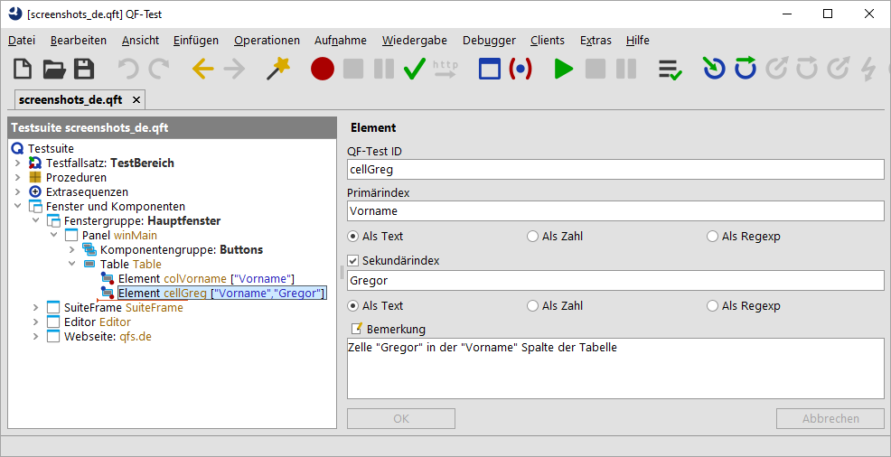

| Version 6.0.3 |
In QF-Test ist es möglich, Komponenten relativ zu einer übergeordneten Komponente zu adressieren. Dies ist besonders dann interessant, wenn die untergeordnete Komponente nur im Zusammenspiel mit der übergeordneten eindeutig angesprochen werden kann. Hier gibt es verschiedenste Anwendungsfälle und auch unterschiedliche Möglichkeiten der Implementierung.
Bei Tabellen, Listen und Bäumen macht es Sinn, für die Unterelemente einen
Index zu verwenden. Die Hauptkomponente wird über die 'QF-Test ID der Komponente' oder
eine SmartID spezifiziert. Der Index für das Unterelement wird daran angehängt.
Beispiele: listid@Eintrag, #Table@Spaltenüberschrift&5.
Siehe Adressierung mittels Index.
Wenn die Hauptkomponente über eine SmartID adressiert wird, können Reiter in
TabPanels oder Listeneinträge einer ComboBox
vereinfacht referenziert werden, zum Beispiel #Tab:Tab1
oder #Item:EintragX. Siehe Adressierung mittels Index.
SmartIDs können an die 'QF-Test ID der Komponente' oder die SmartID, die eine übergeordnete
Komponente identifiziert, angehängt werden. Als Trennzeichen
zwischen über- und untergeordneter Komponente wird @
verwendet. Die Verschachtelung kann auch mehrstufig sein. Die
einzelnen Komponenten können auch mit einem Index versehen werden.
Beispiele:
#Dialog:@#OK,
comboboxid@#Button:,
#Table:&0&0@#CheckBox:.
Der QPath kann ähnlich wie die angehängte SmartID verwendet werden,
ist aber lang nicht so mächtig wie diese.
Ein QPath kann an eine 'QF-Test ID der Komponente' angehängt werden. Als Trennzeichen
dient @:. Die 'QF-Test ID der Komponente' kann auch mit einem
Index versehen sein.
Beispiele: buttonid@:Icon, tableid&0&0@:CheckBox
Weitere Informationen finden Sie in Adressierung mit QPath.
@:xpath=
beziehungsweise @:css=. Die 'QF-Test ID der Komponente' kann auch mit einem
Index versehen sein.
Beispiele: genericDocument@:xpath=${quoteitem:$(xpath)}.
Weitere Informationen finden Sie in Adressierung mit XPath und/oder CSS-Selektoren.
TabPanel. Die Syntax ist
vorzuziehen, wenn QF-Test Variablen in Indizes verwendet werden oder wenn
die Namen von Elementen variieren oder editierbar sind. Die Option
Art der Unterelemente legt fest, ob QF-Test beim Aufzeichnen
'Element' Knoten anlegt oder die 'QF-Test ID'-Syntax verwendet. Mit
der Standardeinstellung "Intelligent" folgt QF-Test obigen Regeln.
Weitere Informationen zur Aufnahme von Unterelementen finden Sie in
Adressierung mit 'Elemente' Knoten.
Hinweis: In der nachfolgenden Aufstellung kann die SmartID der übergeordneten Komponente bereits aus geschachtelten Referenzierungen besteht.
|
|
|
|||||||||||||||||||||||||||||||||||
|
| Tabelle 5.1: Adressierung von Unterelementen | |||||||||||||||||||||||||||||||||||
Das Unterelement wird über eine entsprechende Zeichenkettenfolge mithilfe einer speziellen Syntax beschrieben. Die 'QF-Test ID der Komponente', die im Test verwendet wird, setzt sich hierbei aus der 'QF-Test ID' oder der SmartID der komplexen Komponente (Baum, Tabelle etc.), gefolgt von einem speziellen Trennzeichen, und dem Index des Unterelements zusammen. Das Trennzeichen legt dabei fest, ob es sich um einen numerischen Index, einen Textindex oder einen regulären Ausdruck (vgl. Abschnitt 45.3) handelt:
|
|
|
||||||||||
|
| Tabelle 5.2: Trennzeichen und Indexformat für den Zugriff auf Unterelemente | ||||||||||
Um auf eine Zelle in einer Tabelle mit 'Primärindex' und 'Sekundärindex' zuzugreifen, hängen Sie einfach ein weiteres Trennzeichen an, gefolgt vom 'Sekundärindex'. Die beiden Indizes dürfen dabei durchaus verschiedenen Formaten angehören.
Hinweis Die besondere Bedeutung der Trennzeichen '@', '&' und '%' macht diese zu Sonderzeichen, die geschützt werden müssen, wenn sie selbst in einem Namen auftauchen. Näheres zu diesem Thema finden Sie in Abschnitt 45.5.
Table Komponente mit der 'QF-Test ID' table
hat und Sie einen Mausklick auf die Zelle in der 6. Zeile und in der
Spalte mit der Überschrift "Name" abspielen wollen, legen Sie einen
'Mausevent' an und setzen Sie sein
'QF-Test ID der Komponente' Attribut auf den Wert
table@Name&5.
listid&0 adressiert den ersten Eintrag in einer Liste über numerischen Index. Die Liste selbst wurde als Komponente aufgenommen.
#listname@Europa adressiert den Eintrag mit dem Text "Europa".
Die Liste selbst wird über ihren Bezeichner in einer SmartID referenziert.
#Tree:@/Wurzel/Ast1/Ast1-2/Blatt adressiert einen Baumpfad,
der über die Texte der jeweiligen Baumknoten spezifiziert ist.
#Tree:%/W.*/A.*1/A.*\d-\d/B.* adressiert einen Baumpfad,
der über reguläre Ausdrücke für die jeweiligen Baumknoten spezifiziert ist.
#Tree&/0/5/1/3/ adressiert einen Baumpfad,
der über die numerischen Indizes der jeweiligen Baumknoten spezifiziert ist.
table&-1&-1 adressiert die
unterste Zelle in der rechten Tabellenspalte.
Reiter in TabPanels müssten bei SmartIDs gemäß der obigen Syntax
zum Beispiel über #TabPanel:@Tab1 angesprochen werden,
wobei Tab1 der Name des Reiters ist. Alternativ kann
hier die Abkürzung #Tab:Tab1 verwendet werden. Wenn
keine andere Komponente die SmartID #Tab1 hat, kann
der Reiter sogar einfach über #Tab1 adressiert werden.
Wenn die ComboBox-Liste geöffnet ist, können die Listeneinträge
gemäß obiger Syntax mit #List:@EintragX angesprochen
werden. Als Abkürzung ist auch #Item:EintragX möglich.
Beide Abkürzungen sind komfortabel, die hohe Flexibilität hat aber ihren Preis bei der Performance. Wie hoch dieser ausfällt, hängt von vielen Faktoren ab, so dass die Abwägung Komfort/Performance im Einzelfall getroffen werden muss.
Jedem 'QF-Test ID der Komponente' Attribut (mit oder ohne Unterelement) in einem Event oder Check
Knoten können ein oder mehrere Indizes der Form @:ClassName<idx> angehängt werden,
wobei <idx> optional ist. Dies weist QF-Test an, zunächst die Zielkomponente (und ggf.
das Unterelement) für den Teil des 'QF-Test ID der Komponente' Attributs vor dem @: zu ermitteln und
anschließend darin nach sichtbaren Komponenten der Klasse ClassName zu suchen. Ist
<idx> angegeben, wird dies als 0-basierter Index in die Liste der sichtbaren
Kandidaten interpretiert. Kein <idx> ist äquivalent zu <0>.
Die QPath-Syntax erwartet nach dem @: eine generische Klasse. Eine Übersicht der generischen Klassen finden
Sie im Kapitel Abschnitt 57.1. Falls sich die Komponente nicht mit einer generischen Klasse
aufzeichnen lässt, muss man im QPath die vollständige Klassname angeben.
Für JavaFX lauten einige davon zum Beispiel ImageView, VBox, GridPane oder BorderPane.
Das folgende Beispiel bezeichnet den zweiten ImageView auf der dritten Position einer Liste.
panelSecond.list&3@:javafx.scene.image.ImageView<1>
XPath und CSS-Selektoren sind standardisierte Beschreibungen, um Komponenten in Webbrowsern anzusprechen. (Offizielle Spezifikationen: https://www.w3.org/TR/xpath/ und https://www.w3.org/TR/css3-selectors/).
QF-Test unterstützt die Komponentenbeschreibung via XPaths und CSS-Selektoren für Web-Elemente, um eine leichtere Migration bestehender Web-Tests anderer Tools nach QF-Test zu ermöglichen.
Das Internet bietet bereits eine Vielzahl von Tutorials an, die die Komponentenerkennung mithilfe von CSS-Selektoren (z.B.: https://www.w3schools.com/cssref/css_selectors.asp) sowie die Komponentenerkennung mithilfe von XPaths (z.B.: https://www.w3schools.com/xml/xpath_syntax.asp) beschreiben. Insofern wird auf die Eigenheiten dieser Komponentenerkennung hier nicht mehr explizit eingegangen.
Verwendung in der QF-Test ID
Angenommen in QF-Test soll eine Web-Komponente anhand des XPath "$(xpath)" oder eines CSS-Selektors "$(css)" erkannt werden, so kann dies prinzipiell über mehrere Wege geschehen. Am einfachsten/schnellsten ist es meist, den XPath bzw. den CSS-Selektor im 'QF-Test ID der Komponente' Attribut eines beliebigen Event-Knotens zu spezifizieren. Hierzu wird die folgende Syntax benutzt:
genericHtml@:xpath=${quoteitem:$(xpath)}
genericHtml@:css=${quoteitem:$(css)}
bzw. gleichwertig:
genericDocument@:xpath=${quoteitem:$(xpath)}
genericDocument@:css=${quoteitem:$(css)}
Die Syntax kann hierbei beliebig verschachtelt werden. Zum Beispiel kann man mithilfe von:
genericDocument@:xpath=${quoteitem:$(xpath)}@:css=${quoteitem:$(css)}
QF-Test dazu anweisen zuerst mithilfe eines XPath nach einer Komponente zu suchen und dann anschließend mithilfe eines CSS-Selektors nach einer Unterkomponente.
Hinweis Bitte beachten Sie, dass die @:xpath/@:css aus nachvollziehbaren Gründen erwartet,
dass die verwendete XPath/CSS-Anweisung eine einzelne Komponente zurückliefert. Die Verwendung einer
XPath-Amnweisung die keine einzelne Komponente, sondern eine Zahl (Beispiel: count(.//input[@id!='Google']))
oder einen Boolean (Beispiel: nilled($in-xml//child[1])) zurückliefert, kann deshalb unter Umständen zu
unerwartetem Verhalten führen.
Verwendung in Skripten
Das rc-Modul erlaubt in SUT Skripten ebenfalls Web-Komponenten via XPath bzw.
CSS-Selektoren zu finden.
|
|
|
|||
|
| Beispiel 5.2: Finden von Komponenten anhand von XPath / CSS-Selektoren in Skripten | |||
Und um einen XPath zu benutzen, der keine Komponente(n) zurückliefert benutzen Sie bitte die evalJS-Funktion:
|
|
|
|||
|
| Beispiel 5.3: Beispiel für den Aufruf von XPath-Selektoren, der keine Komponente zurückliefert | |||
Verwendung in Komponentenknoten
Innerhalb eines Komponente-Knotens kann QF-Test des Weiteren ebenfalls angewiesen werden, dass für die Komponentenerkennung ein XPath bzw. CSS-Selektor verwendet werden soll. Hierzu spezifiziert man ein wie folgt aussehendes Erkennungsmerkmal unter "Weitere Merkmale":
|
|
|
||||||||||||
|
| Abbildung 5.11: "Weitere Merkmale"-Attribute für die Komponentenerkennung anhand von XPath oder CSS-Selektoren. | ||||||||||||
Ein 'Element' wird durch zwei Dinge definiert: die Komponente,
zu der es gehört, sowie einen Index innerhalb dieser Komponente. Der
Parentknoten des 'Elements' legt die Komponente fest. Der
Index kann entweder eine Zahl sein oder ein Text. Numerische Indizes
starten mit 0. So entspricht z.B. in einer JList
Komponente das Element mit Index 1 dem zweiten Listeneintrag. Für
Bäume sind einfache numerische Indizes nahezu unbrauchbar, da durch
das Ein- und Ausklappen von Ästen die Indizes aller darunter liegenden
Knoten verändert werden.
Ein Textindex definiert ein Element durch den Text, den es in der
Oberfläche anzeigt. Ein Listenelement namens "Eintrag1" in einer
JList Komponente würde z.B. mit dem Textindex "Eintrag1"
aufgezeichnet. Die Textform ist flexibler als die numerische, kann
aber Probleme bereiten, wenn die angezeigten Texte der Elemente in
einer Komponente nicht eindeutig sind. In diesem Fall wird das erste
passende Element angesprochen. Ein Textindex kann auch als regulärer
Ausdruck (vgl. Abschnitt 45.3) angegeben werden. Auch in
diesem Fall ist das Ziel das erste Element, das auf den regulären
Ausdruck passt.
Die Option Format für Unterelemente legt fest, welches Format beim Aufzeichnen von Elementen verwendet wird.
Beinahe alle Arten von 'Element' haben nur einen Index. Dies
reicht für die Zelle einer JTable Komponente nicht, da
Tabellen zweidimensionale Strukturen sind. Entsprechend sind zwei
Indizes nötig, um eine Zelle exakt zu beschreiben. Der erste, der
'Primärindex', legt die Tabellenspalte fest, der
'Sekundärindex' die Zeile.
|
|  | ||
|
| Abbildung 5.12: Ein 'Element' für ein Tabellenfeld | ||
Auch Baumknoten nehmen eine Sonderstellung ein. Wie oben beschrieben lässt sich die hierarchische Struktur nicht so leicht auf eine lineare Struktur abbilden. Außerdem treten in Bäumen oft Baumknoten mit den gleichen Namen auf. Wenn man dagegen die direkten und indirekten Parentknoten mit in den Namen einbezieht, lässt sich meistens Eindeutigkeit erreichen.
QF-Test verwendet eine besondere Syntax um Baumknoten darzustellen. Ein Index, der mit einem '/' Zeichen beginnt, wird als Pfadindex interpretiert. Denken Sie dabei einfach an ein Dateisystem: Die Datei namens "/tmp/file1" kann entweder flach als "file1" dargestellt werden, was zu Konflikten mit anderen Dateien namens "file1" in anderen Verzeichnissen führen kann. Alternativ kann der volle und eindeutige Pfad "/tmp/file1" verwendet werden. QF-Test unterstützt auch numerische Indizes mit dieser Syntax: Ein numerischer Index der Form "/2/3" bezeichnet den vierten Kindknoten des dritten Kindknotens des Wurzelknotens. Eine kombinierte Form um z.B. mittels "/tmp/2" den dritten Knoten im "tmp" Knoten anzusprechen, ist derzeit nicht möglich.
Hinweis Diese spezielle Syntax macht das '/' Zeichen zu einem Sonderzeichen für 'Elemente' in einer Baumkomponente. Taucht dieses Zeichen selbst in einem Namen auf, muss es daher geschützt werden. Näheres zu diesem Thema finden Sie in Abschnitt 45.5.
Alles was in Abschnitt 5.5 zum 'QF-Test ID' Attribut von 'Komponenten' gesagt wurde, trifft auch auf das 'QF-Test ID' Attribut eines 'Elements' zu. Dieses Attribut muss eindeutig sein und wird von Events und Checks referenziert.
Wenn QF-Test die 'QF-Test ID' eines 'Elements' automatisch zuweist, erzeugt es diese, indem es die 'QF-Test ID' der 'Komponente' des Parentknotens nimmt und den Index (oder die Indizes) anhängt. Diese Art von 'QF-Test ID' ist normalerweise gut zu lesen und zu verstehen. Leider ist sie aber auch die Quelle eines häufigen Missverständnisses: Wenn Sie den Index eines aufgezeichneten 'Elements' ändern wollen, um auf ein anderes Element zu verweisen, dürfen Sie nicht das Attribut 'QF-Test ID der Komponente' des Knotens ändern, der darauf verweist. Stattdessen müssen Sie den 'Primärindex' des 'Element' Knotens ändern.
| Letzte Änderung: 6.9.2022 Copyright © 1999-2022 Quality First Software GmbH |